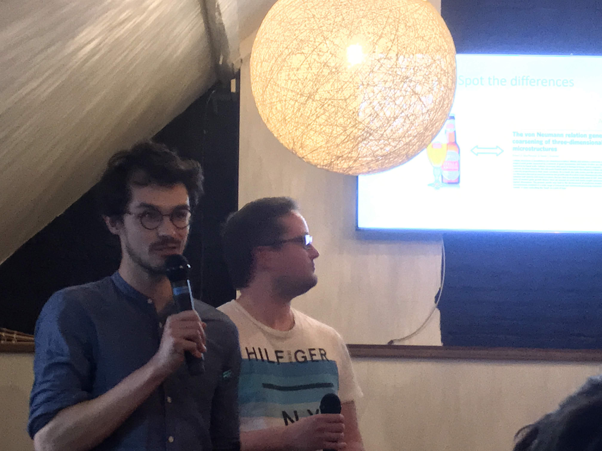
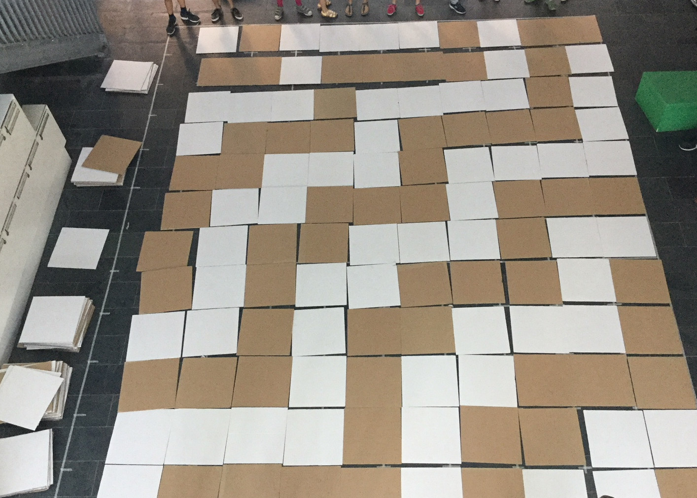

Video for Science figured out
In 2019 I participated in the project 'Science figured out', or 'Wetenschap uitgedokterd' in Dutch. After a workshop from the The Floor is Yours , we had the opportunity to record a 3-minute movie about our research. Here is mine. The beautiful decor is a room in the Arenberg castle in Leuven.
Pint of Science
In May 2019, Felix Nolet and myself prepared a presentation for the Pint of Science festival. We explained how mathematics pops up in the real world around us. The presentation was in a pub which made for a very nice atmostphere.

Children's University
Together with my colleagues from the Gelens lab, I organized workshops for children in the framework of KU Leuven's Children's University. The goal of the workshop was to show how complex patterns, such as those we can see as stripes on zebras or spots on leopards, can arise from simple rules. For this, we used Wolfram's elementary cellular automata with large cardboard plates, to emulate a growing pattern.

Short video about the cell cycle oscillator
In December 2020 I made a small video for the Solvay Workshop on Physics of living systems. I explained a central idea of my research in about one minute.
The video is a bit unpolished but I did have fun making it. For the interested: the animations of the dividing egg and pendulum were done in Python. For the writing on the blackboard I used a Wacom drawing tablet and the drawing software Krita. The ethereal synth music was recorded with my old electronic keyboard.